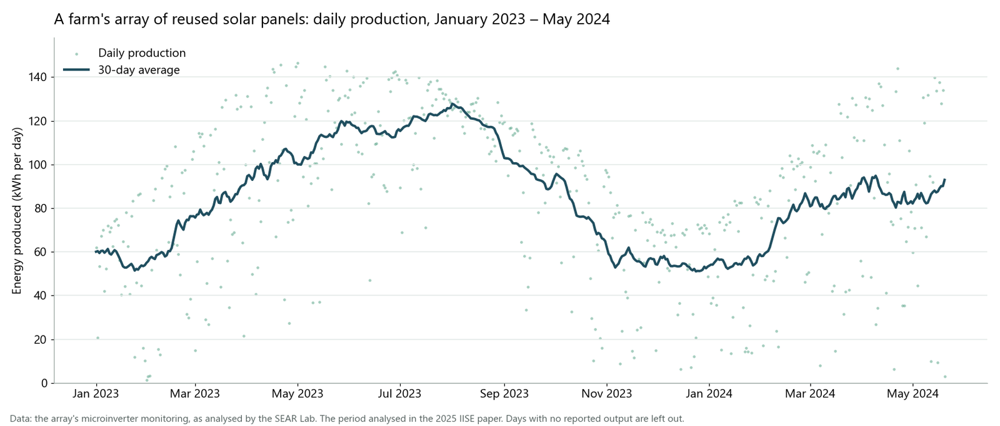

Solar Farm Analytics: How Reused Panels Hold Up
Measuring how a farm's array of second-life solar panels performs against the weather, and whether its output is slipping over time.
- Completed
- 2022–2025
- Solar
- Reused panels
- Degradation
- Regression

In plain English
Can solar panels taken out of service elsewhere be given a second life? In 2022 Dr. Jones and a partner set up a testbed to find out: about 100 used panels from three manufacturers, three to ten years old, on a farm in North Texas, with microinverters reporting every 15 minutes. SEAR Lab students then spent several semesters relating the array's output to the weather: sun angle, cloud cover, humidity and temperature.
The work led to a 2025 IISE conference paper by students Siddharth Shivaji Murkute and Abinash Bastola, the subject of Bastola's undergraduate research (UROP). They paired two years of daily production with weather records and built a regression model that explains about 86 to 89 percent of day-to-day variation on data it had not seen. In early 2024 about 17 percent of days fell below the model's lower bound, far more than chance would give, which they read as a sign of degradation: an average shortfall of about 0.55 percent, in line with manufacturers' typical 0.5 to 1 percent a year, with the caution that the estimate carries model uncertainty.
Main points
- About 100 second-life panels from three manufacturers, 3 to 10 years old, monitored every 15 minutes since August 2022.
- Students related output to sun angle, cloud cover, humidity and temperature, first in R and later in Python.
- A 2025 IISE paper used two years of daily production and weather data to test for degradation.
- Archived; the data and code are kept for a future team.
Papers
Is a reused solar array wearing out?
Murkute, S.S., & Bastola, A. (2025). Measuring Microgrid Degradation: Collecting Meteorological and Microinverter Data. Proceedings of the IISE Annual Conference & Expo 2025, 471–476. https://doi.org/10.21872/annual2025_5962
Two years of daily production and weather, a regression model, and a test for degradation.
- A linear regression on solar radiation, temperature, humidity, cloud cover and related weather measures explained about 86 to 89 percent of day-to-day variation in production on held-out data.
- Solar radiation and diffuse irradiance raised output; temperature, humidity, cloud and snow lowered it.
- In early 2024, 17.36 percent of days fell below the model's 95 percent lower bound, against the 5 percent expected by chance, so the authors reject 'no degradation'.
- The estimated mean shortfall of about 0.55 percent is in line with manufacturers' typical 0.5 to 1 percent a year, though the authors caution that it carries model uncertainty and covers only a few months.
People
- Erick C. Jones Jr., PhD, PEPrincipal Investigator · SEAR Lab directorin
- Abhisheksinh GohilStudent researcher (2023): analysis and poster
- Madhuri PawarStudent researcher (2023): analysis and report
- Saquib Raza MohammedStudent researcher (2023): data analytics reportin
- Siddharth Shivaji MurkuteStudent researcher (2024–25): 2025 IISE paper · Author, Proceedings of the IISE Annual Conference & Expo 2025in
- Abinash BastolaStudent researcher (2024–25): 2025 IISE paper; undergraduate research (UROP) · Author, Proceedings of the IISE Annual Conference & Expo 2025in
Also contributed: Chandramouli Munjurpet Sridharan, Akshaya Kolla, Arun Sreekanth, Rajvi Dilipkumar Kapadia, Sesha Sai Srilekha Moturi, Shweta Ramanand, Surya Venkat Chenna, Swaroop Rayapudi and Swetha Reddy Pabbathi Reddy (2023); Deepak Dandamudi, Harshavardhan Paladugu, Sai Surya Gorrepati, Sathya Sundararajan, Sreeja Boppana, Divi Teja Kaka and Vinay Kumar Shiva Kumar (2024); and Anushka Pawar, Gayathri Sri Muthuvelavan and Lokesh Ram Hariram (2025). Profiles marked in link to LinkedIn. More past and present lab members are on the SEAR Lab team page.